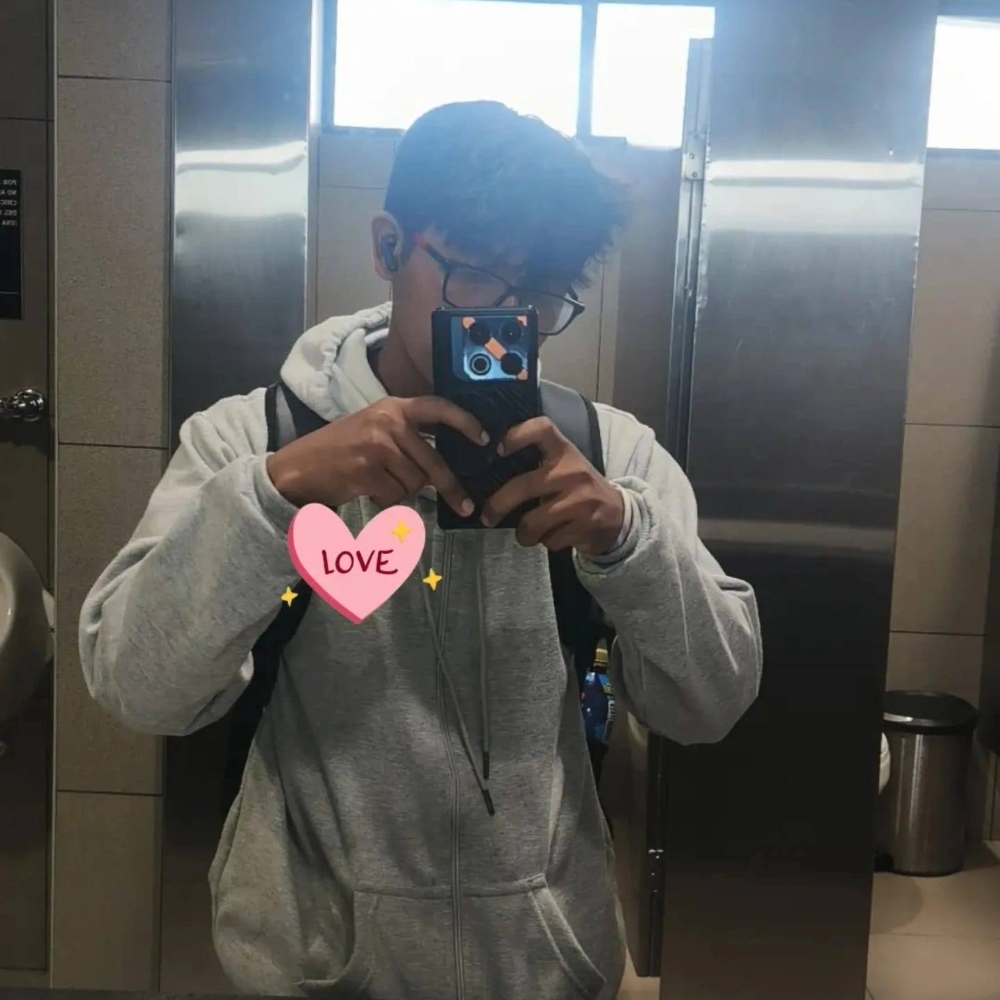

A pesar de todo por lo que estamos pasando con la distancia, que me mantiene lejos de ti, al saber que tu familia no me quiere nada y que han difamado de una manera tan fea que no puedo ni defenderme, si tan solo me conocieran un poquito más, se darían cuenta de que no soy tan malo como las otras personas dicen de mí. No he sido el mejor novio del mundo, pero tampoco soy el peor. Me he esforzado para ser el mejor para ti.
Pero yo creo que todo es cuestión de tiempo. Esperar el momento indicado. Demostrar con hechos quién soy y cuánto te quiero. Más que aceptación, deseo que confíen en mí.
Quiero que sepas que eres mi persona favorita, la que siempre saca una sonrisa en mis momentos más difíciles, la que me hace sentir amado. Hace 1 año y un poquito más te quise rechazar por la diferencia de edad que mantenemos, pero tú me has demostrado que eso no es nada cuando se decide querer a una persona como tú.
Posdata: No estás gorda, amor. Te amo tal como eres.
Posdata 2:
Don López y Doña Bernal, sé que es difícil saber si los rumores que dicen de mí son verdad,
pero la única forma de aclararlo es conociéndome. Aquí voy a decir unas cosas sobre mí,
aunque estoy seguro de que no es de su interés.
- Soy Esneider Espinoza.
- Tengo 18 años. Lo sé, muy mayor para su niña, pero como lo he dicho, estoy dispuesto a esperar.
- Soy un chico algo romántico, me gusta demostrar con hechos y no solo con palabras, aunque me dé miedo acercarme a ustedes.
- Hago deporte, me gusta jugar ecuavóley.
- Tuve un hermano, pero falleció hace más de 14 años; es decir, soy hijo único. Ese sentimiento de soledad me hizo acercarme mucho a su niña.
- No tengo vicios, no fumo ni bebo, no me agrada el alcohol.
- Ahorita que ando viviendo solo otra vez, trabajo y estudio para alivianar la carga de mis padres.
- He trabajado en casi todo: soy eléctrico y ayudante de maestro, mejor dicho, albañil.
- Y ando estudiando en Ibarra, sacando mi título de Tecnología en Electrónica. Pienso seguir otra carrera como Electricidad.
- Sé que no me tienen ni un poquito de aprecio hacia mi persona, pero yo sé que es porque aún no me conocen bien.
- Ojalá con esto que les acabo de decir se den cuenta de que no soy tan mala persona como otra gente dice de mí.
Gracias por su antención y disculpe si le hize perder el timpo leyendo esto.
ESPERARÉ SI ES NECESARIO. NO PUEDO DEJAR ATRÁS A UNA PERSONA QUE ME HACE FELIZ EN MIS MOMENTOS DE SOLEDAD.
